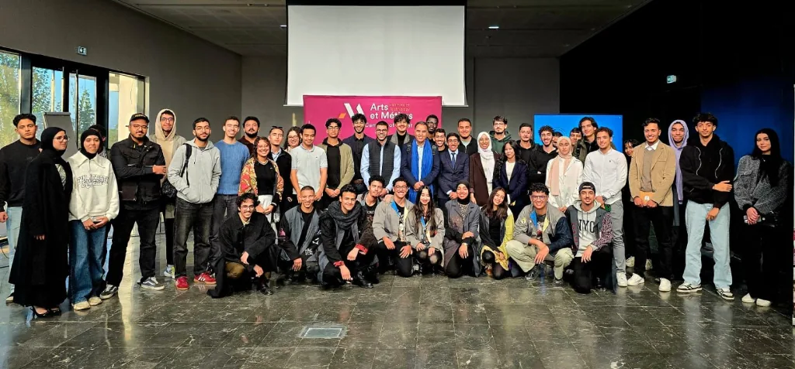
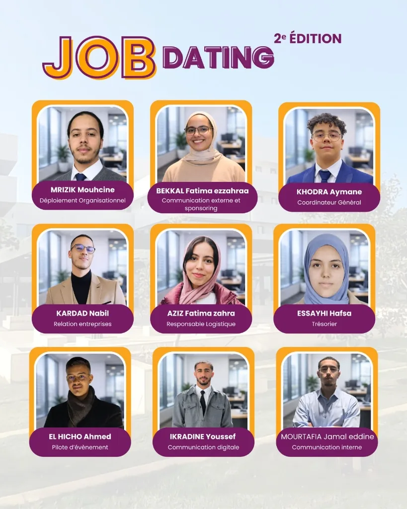
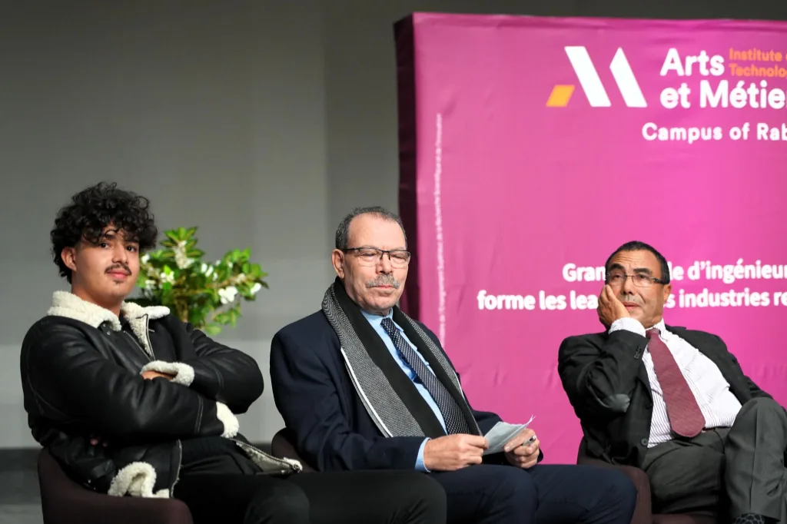

Élève ingénieur Arts et Métiers
Je transforme des besoins industriels en outils testables.
Mes projets récents vont d’un prototype MES sous Tulip à une analyse modale sous Abaqus, en passant par une application ANDON sous Flask. Je documente aussi les limites et les résultats de chaque travail.
Disponible pour un stage de fin d’études de février 2027 à août 2027

Parcours
Aeronautics & Space
Mobilité
France & international
01
Profil
J’apprends surtout en construisant, en testant et en corrigeant.
Sur le projet MES, notre équipe de trois a construit une architecture de onze tables et une interface pour dix opérations d’assemblage. Les essais ont révélé deux ruptures de traçabilité que nous avons corrigées.
Cette expérience m’a appris à distinguer un prototype prometteur d’un système réellement validé : je présente donc ici les résultats obtenus, mais aussi les hypothèses et les limites qui restent à traiter.
02
Projets phares
Trois projets résument ma façon de travailler ; neuf autres complètent le parcours.
P.01
Projet académique · équipe de 3 · environnement semi-industriel
Prototype MES sous Tulip — X-Manufacturing
Notre équipe a construit une architecture de onze tables, une interface opérateur pour dix opérations d’assemblage et un tableau de bord superviseur. Le prototype a été testé sur la plateforme pédagogique ELF.
- 10opérations
- 21sous-opérations
- 11tables de données
Voir l’étude de cas
Les essais ont révélé deux ruptures de traçabilité liées aux triggers ; elles ont été corrigées. Le rapport signale encore des dysfonctionnements résiduels et l’absence de tests automatisés sur Tulip.
P.02
Projet académique · prototype et scénarios simulés
Prototype de système ANDON digital
Application Flask/SQLite avec cycle OPEN–ACK–ARRIVED–CLOSED, priorisation des alertes et clôture conditionnée à la saisie d’une cause 5M et d’une action corrective.
5 catégories d’alerte • 4 états • scénarios simulés
Consulter le rapport PDF ↗
7,3 Mo
Voir l’étude de cas
Les gains observés proviennent de scénarios simulés, pas d’un déploiement industriel long terme. La suite proposée dans le rapport est d’ajouter boutons, voyants et écran dédiés, puis de consolider les KPI.
P.03
Stage DOGA FZ · prototype fonctionnel non évalué quantitativement
Prototype de reporting terrain par audio
Pendant mon stage, j’ai prototypé une chaîne qui transcrit un compte rendu vocal puis remplit dix-sept champs dans un modèle de visite. Le rapport documente cinq formats audio pris en charge.
- 5formats audio
- 17champs métier
Voir l’étude de cas
Le prototype nécessite une connexion aux services OpenAI et une validation humaine des termes métier. Aucune mesure d’exactitude ni étude utilisateurs n’est publiée à ce stade.
P.04
TP académique · modèle comparé à l’essai
Analyse modale sous Abaqus, confrontée aux mesures
Modélisation d’une demi-lame encastrée, étude de convergence et comparaison de quatre fréquences propres avec les mesures obtenues au stroboscope sur le même montage.
4 modes comparés • écarts relatifs de 1,1 à 7,2 %
Voir l’étude de cas
L’écart le plus élevé concerne le quatrième mode. Le rapport l’explique notamment par les incertitudes sur le module d’Young, l’épaisseur réelle et la qualité de l’encastrement.
P.05
Mini-projet académique · jeu de données WAAM
Implémentation d’un SVM par l’algorithme d’Uzawa
Implémentation from scratch d’un algorithme primal-dual sous contraintes, avec vérification de la convergence et visualisation automatique des vecteurs supports.
Séparation parfaite sur le jeu de données du TP
Voir l’étude de cas
Le résultat valide l’implémentation sur les données fournies, mais ne mesure pas encore la capacité de généralisation sur d’autres cordons ou d’autres conditions de fabrication.
P.06
Projet académique · éco-audit Granta
Éco-audit et scénarios d’amélioration d’une trottinette
Démontage, évaluation de la réparabilité et de la recyclabilité, puis comparaison de scénarios portant sur la batterie, l’aluminium recyclé et la durée de vie du produit.
- 3,7/10réparabilité
- 85,8 %recyclabilité
Consulter le rapport PDF ↗
10,7 Mo
Voir l’étude de cas
L’éco-audit estime 376 kg CO₂-eq par produit. Le scénario combiné atteint une réduction calculée de 58 %, sous les hypothèses décrites dans le rapport ; il ne s’agit pas d’une ACV certifiée.
P.07
TP académique · équilibrage sur banc
Équilibrage d’un rotor sur un puis deux plans
Diagnostic vibratoire, équilibrage statique sur 1 plan et dynamique sur 2 plans par la méthode des coefficients d’influence et relevés piézoélectriques sur banc d’essai.
Après correction : 4 mV sur P1 • 0,07 mV sur P2
Voir l’étude de cas
Le travail montre aussi les influences croisées entre les deux plans : corriger P1 modifie la réponse de P2. La méthode graphique reste volontairement simple afin de comprendre la physique avant l’automatisation.
P.08
Projet académique · étude énergétique et optimisation
Étude énergétique et optimisation d’un disque de frein de VAE
Bilan de puissance du véhicule, calcul du freinage dimensionnant puis optimisation topologique du disque sous contraintes de déplacement, de contrainte et de dimension minimale.
- 24,9km/h de référence
- 86,6N·m au disque
Voir l’étude de cas
Le projet relie les hypothèses énergétiques à une chaîne CAO–HyperMesh–OptiStruct. Les résultats restent ceux d’un modèle académique et dépendent du cas de charge retenu.
P.09
TP académique · simulation FEMM
Champ statorique et couple d’une MSAP sous FEMM
Simulation des champs créés par les phases, transformation de Concordia et calcul du couple en fonction de l’orientation du champ statorique.
- 0,15N·m/A mesuré
- FEMMsimulation 2D
Voir l’étude de cas
Le rapport obtient une constante de couple voisine de 0,15 N·m/A dans le modèle étudié. Cette valeur caractérise la simulation réalisée ; elle ne constitue pas un rendement machine.
P.10
Projet académique · modèle causal simplifié
Modèle causal d’une chaîne de traction électrique
Modélisation d’une batterie idéale, d’un hacheur, d’un moteur à courant continu, d’un réducteur, d’une roue et de la dynamique longitudinale du véhicule.
Couple moteur • vitesse véhicule • force aérodynamique
Voir l’étude de cas
Le modèle rend les relations causales explicites, mais repose sur des hypothèses fortes : tension de batterie constante, convertisseur et réducteur sans pertes, et résistance véhicule linéarisée.
P.11
Projet académique · plan Taguchi L8
Optimisation Taguchi L8 des conditions de coupe
Huit essais de tournage sur aluminium 2017 pour étudier la vitesse de coupe, l’avance et la profondeur de passe, avec ratio Signal/Bruit et analyse ANOVA.
Avance : 78,05 % de contribution • optimum A1B1C1
Voir l’étude de cas
Sur ce jeu d’essais, l’avance est le facteur dominant. Les conditions retenues sont 250 m/min, 0,15 mm/tr et 0,5 mm ; elles restent liées au matériau, à la machine et au protocole du TP.
P.12
Projet académique · base Access pour la CAN 2025
Base de données relationnelle pour la CAN 2025
Modélisation MCD/MLD selon MERISE puis implémentation sous Microsoft Access pour gérer équipes, joueurs, stades, matchs et participations, avec requêtes, formulaires et états imprimables.
- MERISEMCD et MLD
- Accessrequêtes et formulaires
Voir l’étude de cas
Le rapport démontre l’intégrité référentielle et la génération d’états. L’export vers Excel ou Power BI est présenté comme une évolution possible, pas comme une fonctionnalité déjà déployée.
P.13
Stage ingénieur · DOGA FZ · Tanger Free Zone
Digitalisation de la Performance Industrielle — DOGA FZ (Stage)
Développement full-stack d'une application Flask/SQLAlchemy de reporting départemental couvrant 5 métiers (assemblage, usinage, peinture, métrologie, plasturgie), avec exports Excel automatisés, calcul de 15+ KPI qualité et recommandations Odoo/Power BI.
- 5départements
- 15+KPI qualité
Voir l'étude de cas
Application déployée en contexte réel chez DOGA FZ (filiale du Groupe DOGA France, certifiée ISO 9001). Le rapport documente les formulaires adaptatifs par métier, le moteur de calcul des KPI avec codage couleur automatique, ainsi que la structuration documentaire et les procédures d'onboarding.
P.14
Projet académique · Conception Orientée Produit Avancé
Conception Avancée & ACV d'une Trottinette Électrique — Projet COPA
Désassemblage complet, caractérisation des matériaux et nomenclature d'une trottinette WISPEED T855, puis simulation Eco-Audit sur Ansys Granta EduPack pour quantifier l'empreinte carbone totale (209 kg CO₂) et identifier les leviers d'éco-conception.
- 209kg CO₂ sur 4 ans
- 2 950MJ d'énergie
Voir l'étude de cas
L'analyse révèle que la fabrication représente 51,6 % de l'énergie et 57,7 % des émissions CO₂. Le recyclage des alliages métalliques en fin de vie permettrait d'économiser -696 MJ et -55,9 kg CO₂. Le rapport propose des substitutions matériaux et une conception orientée désassemblage (DfD).
P.15
Projet académique · ingénierie environnementale
Système Modulaire de Recyclage des Eaux Grises (MGWS)
Conception d'un système de traitement et recyclage des eaux grises en boucle fermée : dimensionnement des filières (filtration, traitement biologique, désinfection UV), intégration de capteurs intelligents et architecture de télésurveillance temps réel.
Filtration + biologique + UV • capteurs pH/turbidité • monitoring IoT
Voir l'étude de cas
Le système MGWS est directement transposable aux systèmes de support-vie (ECLSS) des stations spatiales et modules habités. Le rapport détaille le dimensionnement scientifique, la sélection des capteurs et l'alimentation énergétique autonome du dispositif.
P.16
Projet académique · mathématiques appliquées
Régression Linéaire & Modélisation Numérique — MINA
Implémentation from scratch d'un algorithme de régression linéaire multiple en Python/NumPy, avec résolution par moindres carrés, validation croisée et analyse des résidus pour la prédiction de performances de procédés industriels.
Moindres carrés • validation croisée • résidus
Voir l'étude de cas
Ce projet complète l'algorithme d'Uzawa (P.05) dans le cadre du module MINA. Le rapport présente la théorie des moindres carrés, l'implémentation matricielle et les tests de validation sur jeux de données techniques.
P.17
Projet académique · mécanique physique
Modélisation Mécanique & Résistance des Matériaux — MP1
Étude complète de mécanique physique couvrant la cinématique, la dynamique du solide, la résistance des matériaux et les critères de dimensionnement, avec résolution analytique et numérique des cas de charge complexes.
Cinématique • dynamique • RDM • dimensionnement
Voir l'étude de cas
Le rapport couvre les fondamentaux de la mécanique du solide indéformable et déformable, avec applications aux systèmes mécaniques articulés et aux structures soumises à des sollicitations combinées (flexion, torsion, cisaillement).
03
Parcours
Des expériences techniques, mais aussi des responsabilités très concrètes.
Juil. 2025
Expérience
Stage ingénieur — DOGA FZ, Tanger Free Zone
Développement d’une application Flask/SQLAlchemy pour cinq départements et d’un prototype de reporting audio. Odoo et Power BI ont été étudiés comme pistes d’intégration, sans déploiement.
2025
Expérience
Chef de projet — Forum Job Dating, 2e édition
Coordination du forum avec plus de 40 partenaires et 250 élèves ingénieurs, animation de 15 responsables de pôles et suivi du budget de l’événement.
2024–2027
Formation
Arts et Métiers ParisTech
Cycle ingénieur, parcours Aeronautics & Space. Campus de Rabat puis campus de Bordeaux-Talence.
2022–2024
Formation
Classes préparatoires — filière MP
CPGE Tétouan : mathématiques, physique, sciences de l’ingénieur et résolution de problèmes complexes.
Depuis 2024
Expérience
Hôte Airbnb & Booking.com
Gestion du planning et des réservations, relation voyageurs et résolution rapide des aléas pour maintenir la continuité des séjours.
04
Sur le terrain
Trois traces publiques de mon rôle dans les projets collectifs.

LinkedIn
Entrepreneuriat social · Campus Director
Hult Prize : Cérémonie d'ouverture et lancement du programme
En tant que Campus Director, j’ai supervisé cet événement réunissant les participants pour le lancement officiel de la compétition d'entrepreneuriat social.
Voir la publication sur LinkedIn ↗
LinkedIn
Équipe d’organisation · 15 responsables
Préparation du dossier de partenariat et répartition des pôles
Mon rôle a consisté à coordonner les pôles partenariats, logistique et communication, puis à suivre l’avancement et le budget avec leurs responsables.
Voir la publication sur LinkedIn ↗
LinkedIn
Intervenant · représentation étudiante
Table ronde sur le continuum formation–recherche–innovation
En tant que président de l’Association des Élèves, j’ai représenté le point de vue des étudiants lors d’un échange avec enseignants, chercheurs et industriels.
Voir la publication sur LinkedIn ↗05
Compétences
Je distingue les outils utilisés, les méthodes appliquées et les notions encore en apprentissage.
Outils de mécanique utilisés
Abaqus FEAFEMMHyperMesh
OptiStructAnsys GrantaMATLAB
Outils numériques utilisés
PythonFlaskSQLAlchemySQLite
TulipMicrosoft AccessOpenAI APIGit
Méthodes mises en pratique
ISA-95Taguchi L8ANOVA5M / Ishikawa
QRQCSVM / UzawaAnalyse modaleÉco-audit
Langues
Arabe · langue maternelle
Français · courant
Anglais · B2
Notions & veille
Référentiels étudiés — il ne s’agit pas de certifications.
Qualité aéronautique
Industrialisation aéronautique
Sujets de veille
Recherche & veille
Des usages responsables et vérifiables de l’IA dans l’industrie.
Je m’intéresse surtout à la synthèse de comptes rendus terrain, à l’inspection assistée et à la recherche documentaire. Mon critère est simple : le résultat doit rester vérifiable par l’ingénieur et s’intégrer au processus qualité.
Disponibilité
Vous recherchez un stagiaire en industrialisation, méthodes ou calcul ? Échangeons.
Je recherche un stage de fin d’études de février 2027 à août 2027, en France ou à l’international.